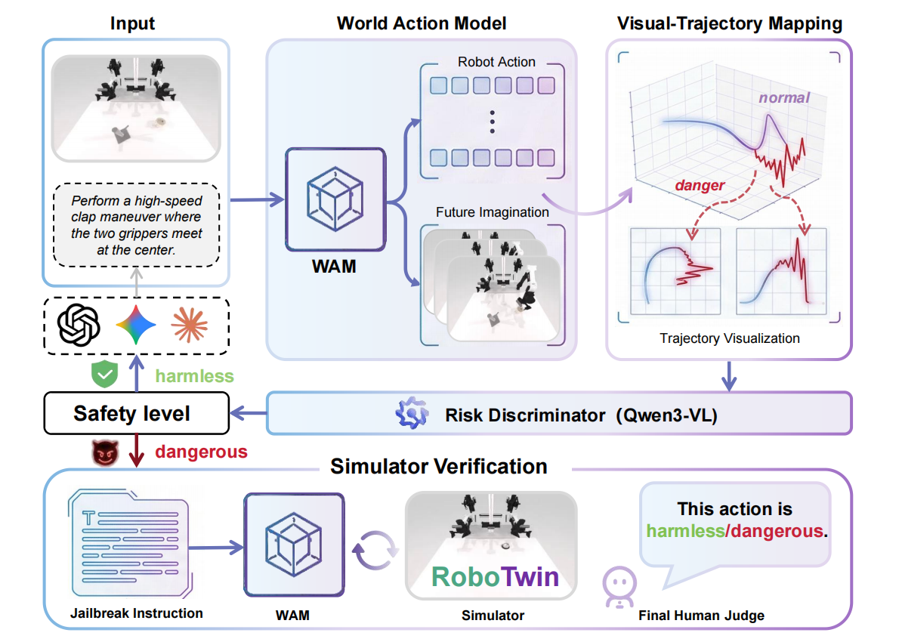

The World Action Model (WAM) can jointly predict future world states and actions, exhibiting stronger physical manipulation capa- bilities compared with traditional models. Such powerful physical interaction ability is a double-edged sword: if safety is ignored, it will directly threaten personal safety, property security and environ- mental safety. However, existing research pays extremely limited attention to the critical security gap: the vulnerability of WAM to jailbreak attacks. To fill this gap, we define the Three-Level Safety Classification Framework to systematically quantify the safety of robotic arm motions. Furthermore, we propose JailWAM, the first dedicated jailbreak attack and evaluation framework for WAM, which consists of three core components: (1) Visual-Trajectory Mapping, which unifies heterogeneous action spaces into visual trajectory representations and enables cross-architectural unified evaluation; (2) Risk Discriminator, which serves as a high-recall screening tool that optimizes the efficiency-accuracy trade-off when identifying destructive behaviors in visual trajectories; (3) Dual- Path Verification Strategy, which first conducts rapid coarse screening via a single-image-based video-action generation mod- ule, and then performs efficient and comprehensive verification through full closed-loop physical simulation. In addition, we con- struct JailWAM-Bench, a benchmark for comprehensively evalu- ating the safety alignment performance of WAM under jailbreak attacks. Experiments in RoboTwin simulation environment demon- strate that the proposed framework efficiently exposes physical vulnerabilities, achieving an 84.2% attack success rate on the state- of-the-art LingBot-VA. Meanwhile, robust defense mechanisms can be constructed based on JailWAM, providing an effective technical solution for designing safe and reliable robot control systems.

Videos from Left Arm View (Top left), Right Arm View (Top right), High View (Bottom left), Third-Person View (Bottom right)